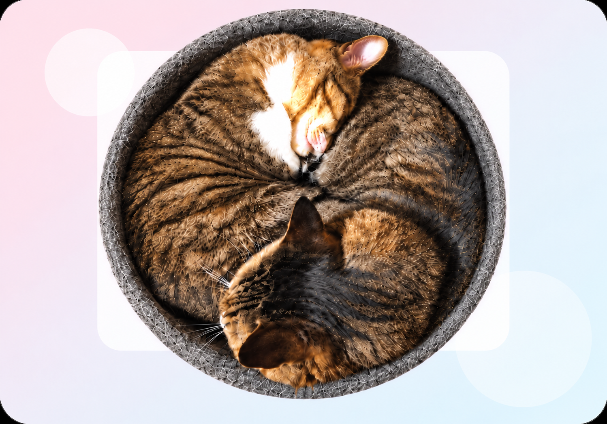

PROFILE
プロフィール

戸田 実来
Miku Toda
佐賀星生学園 専門課程 情報デザイン学科 学生
情報デザイン学科で、PhotoshopやIllustratorを使った作品制作を学んでいます。 グラフィックデザインを中心に、Ｗebやイラスト制作にも取り組んでいます。見た人に分かりやすく伝わるデザインを目指しています。
- 好きなこと
- イラストロジック、空の写真を撮ること
- 好きな色
- 水色系統、黄緑、黒、白、薄いピンク
- 使用ツール
- Illustrator / Photoshop / 生成AI